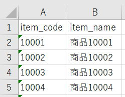

データベースの正規化とマスタの作成
エクセルVBAでデータベースを扱うためのSQL入門です。
前回までは1つのテーブルのみを扱ってきましたが、これからは複数のテーブルを扱っていきます。
複数テーブルの情報を必要に応じて結合して取得できるようになると、よりデータベースおよびSQLの利便性が感じられると思います。
SQLでは、これらの機能を強力かつ柔軟にしたことが行えるます。
同じcodeで同じnameのデータが多数存在していました。
同じデータが存在することはとても無駄なことです、ディスクの容量の無駄遣いでもあります。
このような無駄を排除してデータベースをあるべき形にすることをデータベースの正規化と言います。
データベース正規化とは
情報関係の資格を取るのであれば言葉の定義を正確に覚える必要がありますが、ここではごく簡単な説明にとどめます。
以下の説明は一般的な説明として問題ないはずですが、言葉使いや細部においては資格試験等の説明と相違する可能性がある点はご承知おきください。
導出項目を持たない
正規化されていないデータとは、エクセルで考えると分かりやすいと思います。
・セル結合されている
・横（列）に繰り返し現れるグループある
セル結合はいうまでもないでしょう。
繰り返し現れるグループとは、日別のデータが横に並んでいるようなデータです。
これらは、エクセルで関数を使ってデータ取得する時にも、かなり困った状態であることはお分かりいただけると思います
前回まで使用したテーブルは、金額が導出項目なので（であるとすれば）、完全には第1正規形とは言えないことになります。
すべての非キー属性が候補キーに関して完全関数従属している
レコードが、テーブルの主キー 以外に従属しないようにします。
主キーだけで決まる（関数従属）ものがあれば別テーブルに分離します。
codeで決まるnameが全てのレコードに存在しています。
このような項目が複数ありますので、これを分離して別テーブルにするのが第2正規形になります。
いかなる非キー属性も候補キーに対して推移的関数従属をしない
A→B、B→C、かつ、A→Cではない
フィールドの内容が、テーブル内の複数のレコードに適用されるときは、それらのフィールドを別のテーブルに配置します。
第3正規形をあまり厳密に適用すると、使いづらいデータベースになってしまう場合もあります。
第3正規形は、頻繁に変更されるデータ以外では、あまり厳密に適用しないほうが良い場合もあります。
マスタデータとトランザクションデータ
また、それらを集約したファイルやデータベースのテーブルなど。
単に「マスタ」と省略するのが一般的である。
マスタデータは、m_○○、m○○、M_○○、M○○
トランザクションデータは、t_○○、t○○、T_○○、T_○○
このような命名は良く使われます。
○○は英文を使って端的な単語にする場合や、数値で管理したりします。
テーブル数が多くなってくると、英単語ではかえって分かりづらくなってしまう為、数値（さらに記号を追加）を使ったりします。
マスタデータは、m_○○
トランザクションデータは、t_○○
このような名称を使っていきます。
正規化したテーブル定義
| № | 列名 | 型 | PRIMARY KEY | AUTOINCREMENT | NOT NULL |
| 1 | id | INTEGER | 〇 | 〇 | 〇 |
| 2 | code | TEXT | 〇 | ||
| 3 | name | TEXT | 〇 | ||
| 4 | address | TEXT | |||
| 5 | sales_date | TEXT | |||
| 6 | item_code | TEXT | |||
| 7 | item_name | TEXT | |||
| 8 | item_price | INTEGER | |||
| 9 | item_count | INTEGER | |||
| 10 | item_amount | INTEGER | |||
| 11 | comment | TEXT |
| № | 列名 | 型 | NOT NULL | PRIMARY KEY | AUTOINCREMENT |
| 1 | code | TEXT | 〇 | 〇 | |
| 2 | name | TEXT | 〇 | ||
| 2 | address | TEXT |
CREATE TABLE m_customer (
"code" TEXT NOT NULL
,"name" TEXT NOT NULL
,"address" TEXT
,PRIMARY KEY (code)
);
| № | 列名 | 型 | NOT NULL | PRIMARY KEY | AUTOINCREMENT |
| 1 | item_code | TEXT | 〇 | 〇 | |
| 2 | item_name | TEXT | 〇 |
CREATE TABLE m_item (
"item_code" TEXT NOT NULL
,"item_name" TEXT NOT NULL
,PRIMARY KEY (item_code)
);
このテーブルだけで見た時には、カラム名はcode,nameだけでも良いように見えます。
ここはどちらが良いという事もありませんし、意見がわかれるところだと思います。
| № | 列名 | 型 | PRIMARY KEY | AUTOINCREMENT | NOT NULL |
| 1 | id | INTEGER | 〇 | 〇 | 〇 |
| 2 | code | TEXT | 〇 | ||
| 3 | sales_date | TEXT | |||
| 4 | item_code | TEXT | |||
| 5 | item_price | INTEGER | |||
| 6 | item_count | INTEGER | |||
| 7 | comment | TEXT |
CREATE TABLE t_sales (
"id" INTEGER PRIMARY KEY AUTOINCREMENT NOT NULL
,"code" TEXT NOT NULL
,"sales_date" TEXT
,"item_code" TEXT
,"item_price" INTEGER
,"item_count" INTEGER
,"comment" TEXT
);
※item_priceは、item_codeが同じでも金額が違うので従属関係にありません。
そもそもその情報が欠落したデータベースだという事になります。
これはデータ蓄積時に良く注意しなければなりません。
後から、このような情報を追加することは極めて困難になります。
テーブル名変更と列追加（ALTER TABLE）とテーブル自動作成
非正規化から正規化したテーブルを作成
ただし、同名のテーブルがないかは確認してから行ってください。
データをシートに取得後に、DROP TABLE→CREATE TABLE→INSERTの順で行います。
ワークシートでも簡単にできますが、SQLで作成してみましょう。
SELECT code,name,address
FROM t_sales
GROUP BY code
ORDER BY code
このSQLを、
VBAクラスの全コード：データの取得
データの挿入：バルクインサート
INSERT INTO m_customer
("code","name","address")
VALUES
('001','販売先001','住所001')
,('002','販売先002','住所002')
,('003','販売先003','住所003')
,・・・SELECT item_code,item_name
FROM t_sales
GROUP BY item_code
ORDER BY item_code

INSERT INTO m_item
("item_code","item_name")
VALUES
('10001','商品10001')
,('10002','商品10002')
,('10003','商品10003')
,・・・SELECT code,sales_date,item_code,item_price,item_count,comment
FROM t_sales
100万行あると少し時間がかかりますが、それでも10秒程度でしょう。
DROP TABLE t_sales
CREATE TABLE t_sales (
"id" INTEGER PRIMARY KEY AUTOINCREMENT NOT NULL
,"code" TEXT NOT NULL
,"sales_date" TEXT
,"item_code" TEXT
,"item_price" INTEGER
,"item_count" INTEGER
,"comment" TEXT
);
シートからデータをINSERTします。
INSERT INTO t_sales
("code","sales_date","item_code","item_price","item_count","comment")
VALUES
('057','2019-11-28','10051',1200,12,'備考001')
,('046','2019-11-29','10099',1500,20,'備考002')
,('027','2019-11-30','10027',1300,5,'備考003')
,・・・データベース正規化の最後に
以下に、全テーブル定義と、テーブル自動作成のVBAを掲載しておきます。
今回は、次回以降のテーブルを結合して取得する前準備を行いました。
データベース正規化については、特に専門的にDBを扱うという事でないなら、単純に重複データを排除するくらいの認識で問題ありません。
実は、SQLで他のテーブルから直接INSERTすることができます。
これについては、後々に紹介します。
同じテーマ「SQL入門」の記事
データの取得：集約集計、並べ替え（DISTINKT,GROUP,HAVING,ORDER）
SQL関数と演算子
データベースにおけるNULLの扱い方
データベースの正規化とマスタの作成
全テーブル定義とテーブル自動作成VBA
テーブルを結合して取得（INNER JOIN,OUTER JOIN）
複数のSELECT結果を統合（UNION,UNION ALL）
データの更新（UPDATE）
データの削除（DELETE）
他のテーブルのデータで追加/更新/削除
インデックスを作成して高速化（CREATE INDEX）
新着記事NEW ・・・新着記事一覧を見る
VBA100本ノック 100本目：WEBから100本ノックのリストを取得｜VBA練習問題（3月3日）
VBA100本ノック 99本目：自動席替え（行列と前後左右が全て違うように）｜VBA練習問題（3月2日）
VBA100本ノック 98本目：席替えルールが守られているか確認｜VBA練習問題（3月1日）
VBA100本ノック 97本目：Accessデータを取得（グループ集計）｜VBA練習問題（2月27日）
VBA100本ノック 96本目：Accessデータを取得（マスタ結合&抽出）｜VBA練習問題（2月26日）
VBA100本ノック 95本目：図形のテキストを検索するフォーム作成｜VBA練習問題（2月24日）
VBA100本ノック 94本目：表範囲からHTMLのtableタグを作成｜VBA練習問題（2月23日）
VBA100本ノック 93本目：複数ブックを連結して再分割｜VBA練習問題（2月22日）
VBA100本ノック 92本目：セルの色を16進で返す関数｜VBA練習問題（2月20日）
VBA100本ノック 91本目：時間計算（残業時間の月間合計）｜VBA練習問題（2月19日）
アクセスランキング ・・・ ランキング一覧を見る
1.最終行の取得（End,Rows.Count）｜VBA入門
2.RangeとCellsの使い方｜VBA入門
3.変数宣言のDimとデータ型｜VBA入門
4.マクロって何？VBAって何？｜VBA入門
5.Range以外の指定方法（Cells,Rows,Columns）｜VBA入門
6.セルのコピー&値の貼り付け（PasteSpecial）｜VBA入門
7.繰り返し処理（For Next)｜VBA入門
8.セルに文字を入れるとは（Range,Value）｜VBA入門
9.マクロはどこに書くの（VBEの起動）｜VBA入門
10.とにかく書いてみよう（Sub,End Sub）｜VBA入門
このサイトがお役に立ちましたら「シェア」「Bookmark」をお願いいたします。
記述には細心の注意をしたつもりですが、
間違いやご指摘がありましたら、「お問い合わせ」からお知らせいただけると幸いです。
掲載のVBAコードは動作を保証するものではなく、あくまでVBA学習のサンプルとして掲載しています。
掲載のVBAコードは自己責任でご使用ください。万一データ破損等の損害が発生しても責任は負いません。